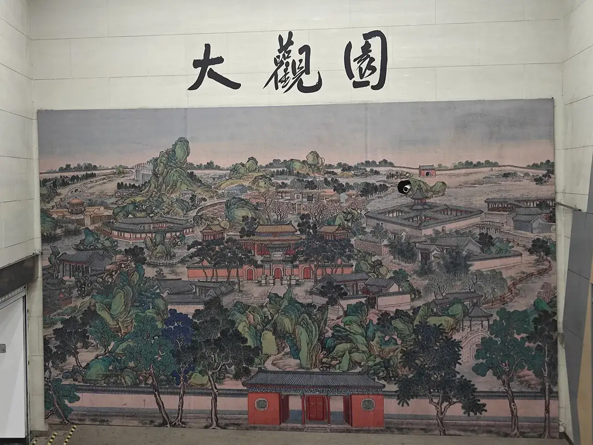
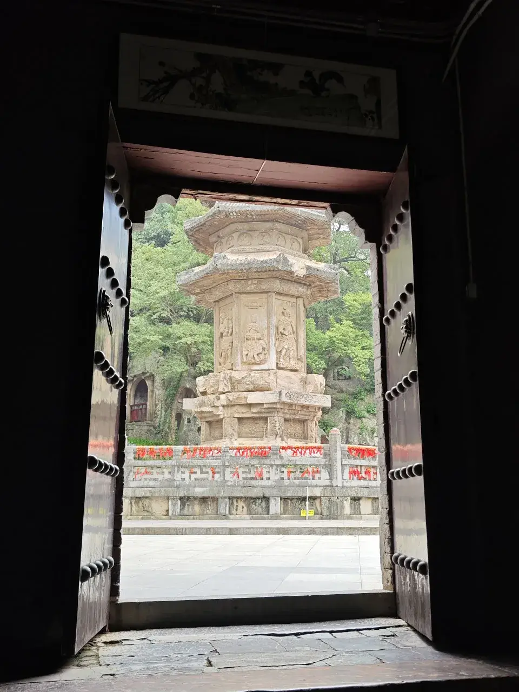
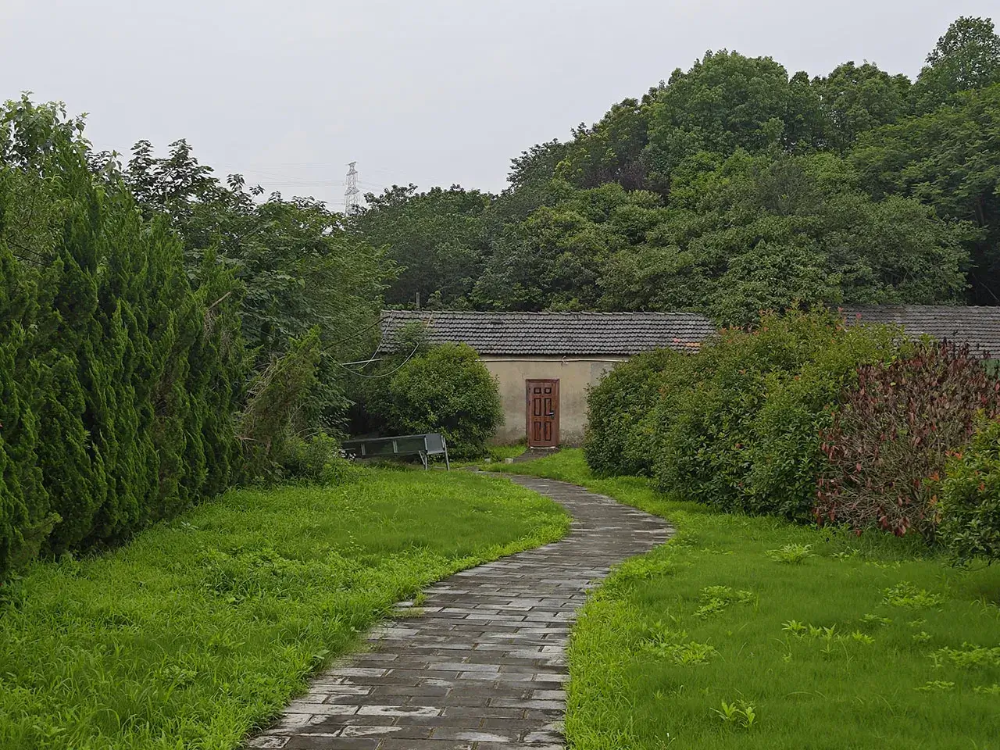
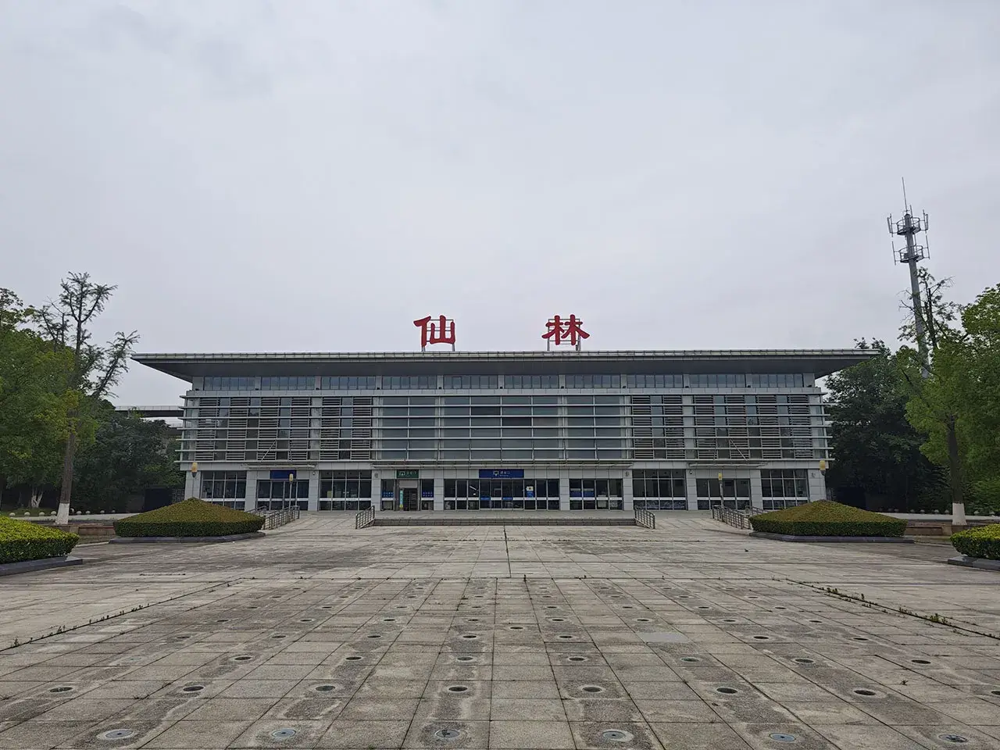
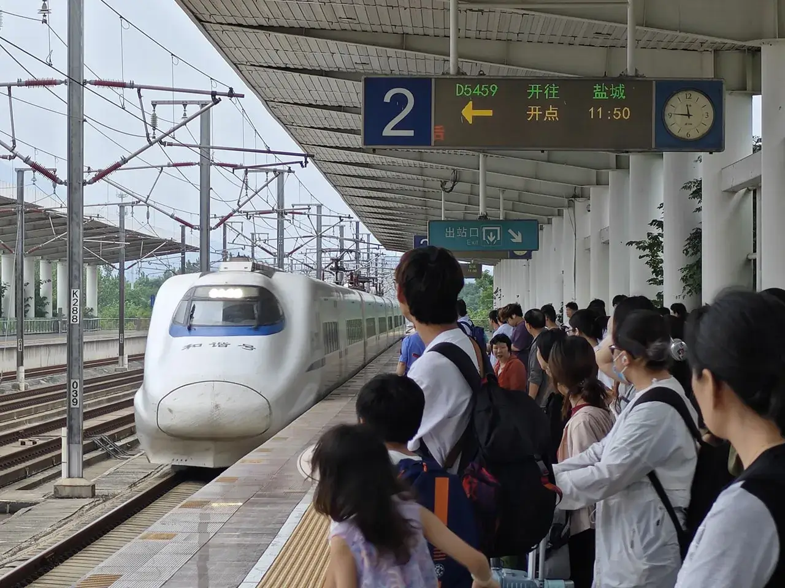
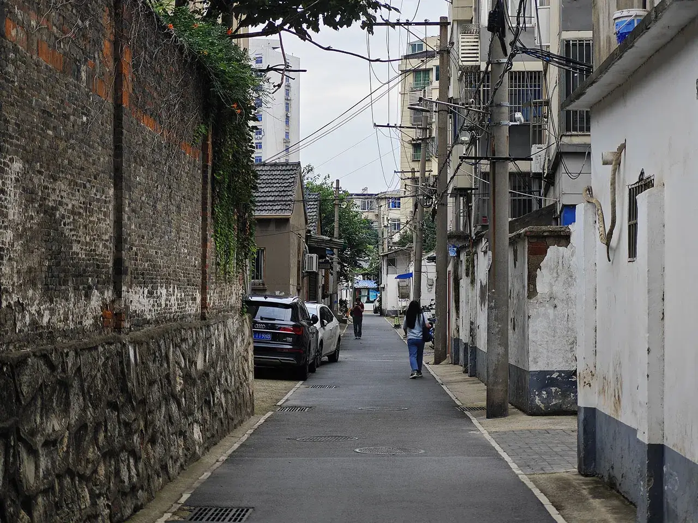
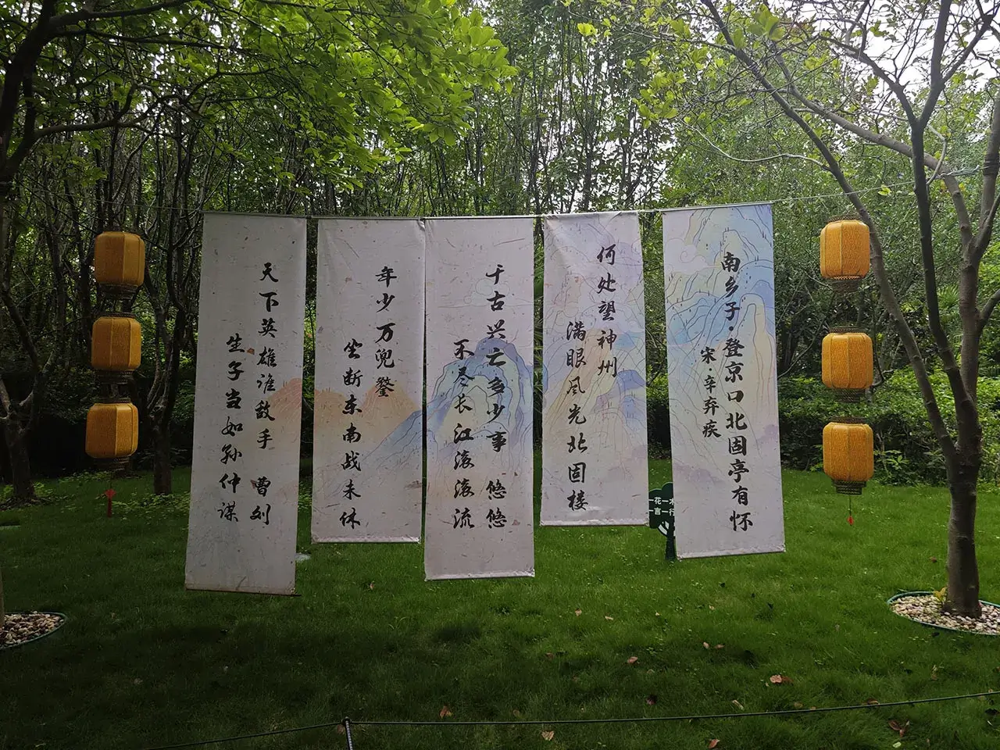
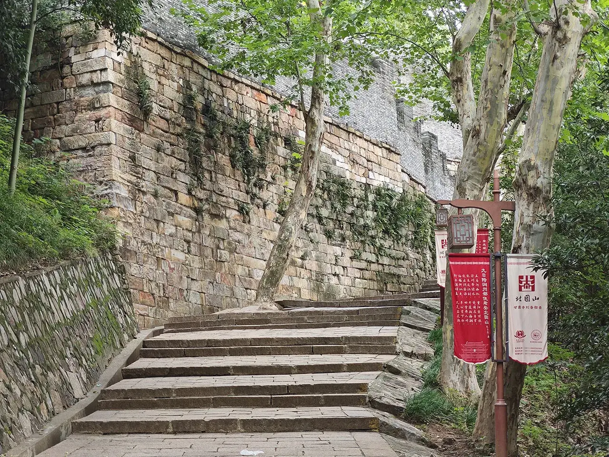
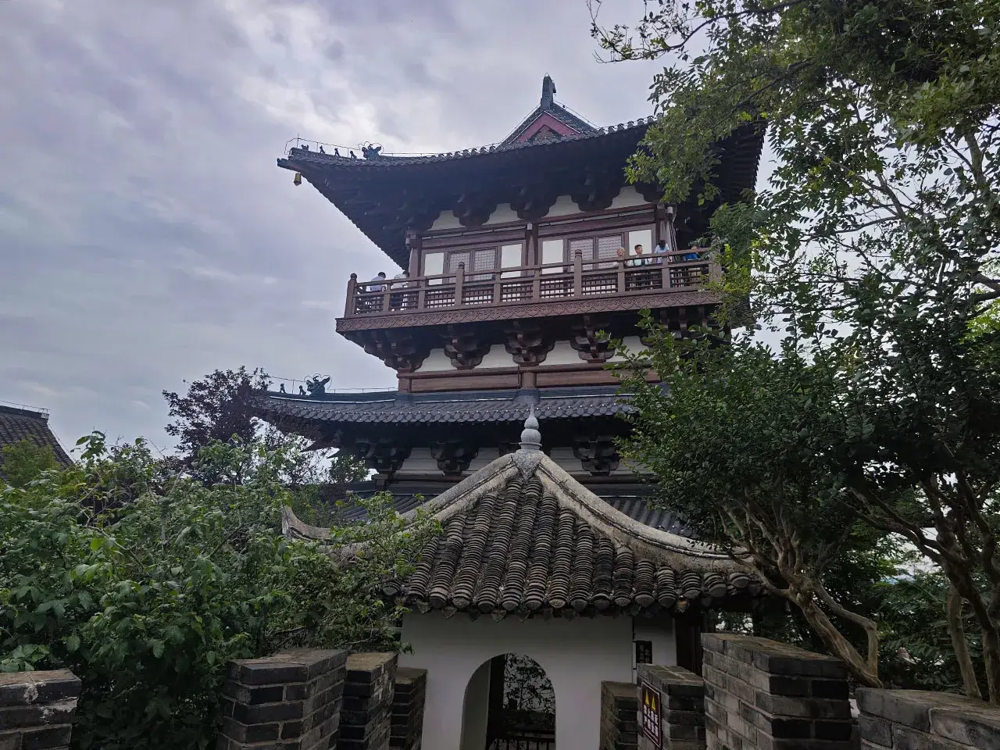

前言
长亭日暮
长亭，日暮
登京口古渡
任时光回溯
纷飞千年变故
（后面他写得太烂了不放出来了）
尽管去公司的报到时间让这次忙里偷闲地南京之旅规划得很是紧凑，得舍弃不少景点，但是俺还是想去一个自己觉得很有意思的地方——江苏镇江！
- 一是觉得南京以后还是有机会去，镇江就很难再去。
- 二是自己还有一点点镇江血统，值得一去😎！
- 最重要的是伟大的大思想家 pro 神本科就读的江苏大学位于镇江，必须去膜拜一下😭！
于是开整！
导览
将军莫虑，且看此图！
鼠标交互事件有空再做吧……
正文
6.23
05:56 出发！
起床。噼里啪啦买好物资，润！
06:00 大行宫站

在去镇江之前先去仙林看一下神秘工厂！大行宫站-2 号线-金马路站-4 号线-仙林湖站，￥6。
本来好好一幅画，为了装摄像头，直接在画上凿个洞，太差评了😠！！！
07:17 神秘工厂
牛马电子大厂
坐了漫长的地铁线，再蹬个共享单车开始骑。终于到了神秘工厂处🤫。
没啥好看的，继续蹬共享单车去栖霞山好了。感觉这里是南京非常偏僻的地方了，全是运货的大货车😵。
07:34 栖霞山度假区
07:35 江乘古邑
《史记·始皇本纪》秦始皇三十七年（前 210 年），秦始皇“上会稽，还过吴，从江乘渡，并海上，北至琅琊”。明万历《上元县志》称因秦始皇渡江，置江乘县，属会稽郡。县域辽阔，今栖霞区皆在江乘县境。孙吴时设江乘典农都尉，晋灭吴后复为县。东晋咸康七年（341 年），以县域南部侨置临沂县，属南琅邪郡。南陈太建元年（569 年），属建兴郡。隋朝时，废江乘县，地入丹徒县、句容县和江宁县。秦朝时县城遗址在今栖霞区摄山镇西湖村。
看来这里就是老暴君到此一游的地方了。
07:36 仿古商业街
关门大吉😭
经典仿古商业街，但这里是南京非常偏远的地方，一般去南京旅游也很少会来这里。于是好看是挺好看，没人是真没人😇。
据说 07:00 以前进栖霞山可以趁检票员没上班直接进去。但是公寓所在地点决定了这是到不了的，还是买票吧！原价￥50 的门票不知道为啥这天特价￥25。
07:44 南朝四百八十寺之栖霞禅寺
这个寺庙要 08:00 才开门，只能在外面先晃悠一会儿。
07:45 栖霞胜境
一些噱头
"第一金陵明秀山”栖霞山风景名胜区，地处南京东北郊，北临长江，占地 742 公顷，以山高景美、古迹遍布、红叶满山、钟灵毓秀而著称于世，被誉为中国四大赏枫胜地之一。自明代以来就有“秋栖霞”之说，"栖霞丹枫”为金陵四十八景之一。山麓下的栖霞古寺，至今有 1500 多年历史，是佛教“三论宗”的祖庭在唐代便是佛教“四大丛林”之一。栖霞山风景名胜区素有“一座栖霞山，半部金陵史”的美誉，是观光、旅游、科普、休闲度假的首选胜地。
作为一个旅游区总得要有点噱头。但作为一个规划满满的特种兵来说，只能做一些取舍，就去栖霞禅寺好了，不爬山😇。
07:46 阿弥陀佛系列

瞎晃荡
山脚下的是佛教主题。还有大巴车送你上山，￥20。下次一定！
08:04 开门了！
里面进门是四大金刚，然后一个祭坛，后面一个大佛~不让拍照，不拍了！
08:07 黑神话 · 悟空取景地之栖霞寺舍利塔

栖霞寺舍利塔的整体结构紧凑，雕饰华美，塔八角五檐，高 15 米，是研究南唐建筑的重要实物，中国佛塔艺术的精品之作，是南方少见的密檐式塔。栖霞寺舍利塔始建于南齐永明元年（483 年），舍利塔后于隋朝仁寿元年（601 年）复修原为五层方形木塔。现存石塔系五代南唐（937～975 年）重建。栖霞寺舍利塔是中国现存的古石塔之佳品，代表了南唐时期雕刻艺术的最高水平。
神秘古塔
寺庙后门出去就是真古迹了🤩！
08:10 千佛崖
南朝佛陀
千佛岩，又名千佛岭，也叫千佛崖，是南京唯一一处六朝佛教石刻遗迹，全国重点文物保护单位。其建造年代早于河南洛阳龙门石窟 17 年，晚于山西大同云冈石窟 31 年。 千佛岩现存石窟佛龛 200 多个，石像 500 余尊，石窟大小不，错落有序。石窟中的佛像有的五六尊一龛，有的二十余尊一室。龛内布局有的是一佛一弟子，有的是佛二菩萨。窟门两侧大都有天王力士雕像，以示护法，佛座还常常雕有双狮。 1500 多年来，千佛岩石窟佛龛佛像历经沧桑，曾遭受多次人为破坏，历代屡有增补和修葺。千佛岩上题刻很多，历代文人墨客游历栖霞山，赏景拜佛，留下不少动情的诗篇。更有将诗或题名镌刻在山岩上、佛龛上、石碑上，为后人留下宝贵的墨迹，成了具有观赏、研究价值的文化遗产，给景区增彩添色.
南朝时期，建康人民老惨了，于是他们就开始信仰佛教以求解脱😭！
不过感觉这个石窟的质量明显不如北朝的🤔。
08:26 三圣殿
有个牛逼的！
三圣殿位于南京市栖霞区栖霞寺舍利塔东，又称大佛阁、无梁殿，是供无量寿佛，为南齐时弋开凿，是中国佛教艺术黄金时代的绝世珍品。殿内有三尊巨型佛像，体型巨硕，拔地参天，体现了一种崇高庄严之美，正中是无量寿佛像，两侧胁侍为观世音、大势至二菩萨像，合称“西方三圣”，故名“三圣殿”。
这也是个无梁殿。查了下跟邯郸的那个无梁殿一样是万历年间修的。里面有个大佛不让拍，只好远远地偷偷拍🤫。
08:29 撤！
出！
逛荡地差不多了，撤！

人少真好看！
09:07 将军走此小道！

接下来骑共享单车去看坟了。骑得老远太偏僻了跑到现代人的墓园旁边了😱。
09:08 永宁陵
神秘石兽
陈文帝陈蒨永宁陵石刻位于南京市栖霞区狮子冲山谷内。现存双兽，东兽双角称天标，西兽独角称麒麟，两兽体态修长，昂首园步体侧刻双翼，有卷云纹，是现存南朝陵墓石兽中的精品。1988 年，以“陈文帝陈蒨永宁陵石刻”之名被列为第三批全国重点文物保护单位。2013 年，在石刻西北发现两座大型砖室墓葬，规俱达到南即帝陵级别，其主可能分別为南朝梁昭明太子素统及其生母丁贵娘。墓葬出土“羽人戏虎”及“竹林七贤”砖拼壁画和铭文纪年砖。
栖霞山被认作是个风水宝地，因此南朝年间很多王公贵族都选择葬于此🤔。墓主已经失考了，查了下有个说法是这两个石兽都是公的，而陈文帝本人是个立过男皇后的同性恋，就因此被认作是陈文帝的坟了😵。
09:28 仙林站

购买车票 D5459 11:50 仙林-12:07 镇江，￥17。这个站太小了一天只有一班能去镇江，而且早上没车次还不给开门😵。只好接着骑共享单车逛荡了。
09:58 梁吴平忠侯萧景墓石刻
梁思成到此一游
位于南京市栖霞区十月村路。萧景（477-523）本名萧昺，字子昭，梁武帝萧衍堂弟，受封吴平县侯，诸号“思”。曾进行过考古勘探与试掘，暂未发现地下墓葬。神道石刻现存辟邪一、华表柱一。华表柱是现存南朝同类遗执中保存最完整的一例，长方形柱额上反刻“梁故侍中中抚将军开府仪同三司吴平思侯萧公之神道种特殊书体“反左书"在南朝捕道华表柱上仅存两例。1988 年被列为第三批全国重点文物保护单位。
又是穿过一堆工厂，骑到一个神秘小道里，别有洞天。这里只剩下一个石刻了！虽然这个石刻非常偏僻，但是据说得到了专家们的高度评价！还被以原型设计成了南京市徽🤩！
10:22 梁桂阳简王萧融墓石刻
神秘炼油厂石刻👅
又骑了好一阵前往南京石油化工厂！这个石刻跟萧景墓的差不多样式，是一对吐着大舌头的辟邪~
本以为南京这个地方应该不存在交通问题，结果共享单车跟我说太偏僻了不让停，又不想再骑回高铁站，只好花了￥20 调度费😵。公交车也没得，然后打车也是等了好久才等到，￥21.22 回高铁站。
11:05 候车中
不折腾了！等车来吧！
11:47 和谐号

这个站台有人抽烟还被叫住不让抽，第一次见到禁烟的站台，好评🥳！
特意选了一个靠西的窗户的位置想看看长江，结果这个车窗玻璃没擦看不见，差评😭！
12:16 镇江站
这就去拜访 pro 神母校😭~但是 pro 神并不知道江苏大学梦溪校区的存在，查了下这个校区已经废弃很久了。火车站北广场站-3 路-大市口东站，￥1。
12:47 梦溪园
沈括故居
以前有听说过沈括的《梦溪笔谈》，但是也没咋太懂，而且梦溪园要 13:30 才给开门，遂不看。
12:59 江苏大学梦溪校区
这就是刘裕？
看小红书上说江苏大学梦溪校区里有一个刘裕的雕像，去看看。然后就找到这个无名的雕像了，旁边还有一个破损的石碑底座。看这个人物造型感觉不像是“气吞万里如虎”的刘裕😇。
13:13 梳儿巷

梳儿巷，原名上河巷元更名为上河街，明、清仍沿用此名。清末该片区纺织业发达，因巷内多设机房，织机上有部件“梳栉”后习称梳儿巷。宋武帝刘裕的旧宅基也位于此巷内的寿邱山上，即辛弃疾词中“斜阳草树，寻常巷陌，人道寄奴曾住”处。
梦溪园旁边就是传说中的寄奴居🤔。真的跟当年辛弃疾说的一样就是个普通的小巷子。
撤！梦溪路站-8 路-甘露寺（江滨医院北）站，￥1。
永遇乐 · 京口北固亭怀古
千古江山，英雄无觅，孙仲谋处。
舞榭歌台，风流总被雨打风吹去。
斜阳草树，寻常巷陌，人道寄奴曾住。
想当年，金戈铁马，气吞万里如虎。
元嘉草草，封狼居胥，赢得仓皇北顾。
四十三年，望中犹记，烽火扬州路。
可堪回首，佛狸祠下，一片神鸦社鼓。
凭谁问：廉颇老矣，尚能饭否？
13:26 北固山
镇江以三山一渡作为招牌。但是时间有限，就选择只爬这个山了！
次北固山下
客路青山外，行舟绿水前。
潮平两岸阔，风正一帆悬。
海日生残夜，江春入旧年。
乡书何处达？归雁洛阳边。
13:26 试剑石
孙权 & 刘备
玄德更衣出殿前，见庭下有一石块。玄德拔从者所佩之剑，仰天祝曰：“若刘备能够回荆州，成王霸之业，一剑挥石为两段。如死于此地，剑剁石不开。”言讫，手起剑落，火光迸溅，砍石为两段。孙权在后面看见，问曰：“玄德公如何恨此石？”玄德曰：“备年近五旬，不能为国家剿除贼党，心常自恨。今蒙国太招为女婿，此平生之际遇也。恰才问天买卦，如破曹兴汉，砍断此石。今果然如此。”权暗思：“刘备莫非用此言瞒我？”亦掣剑谓玄德曰：“吾亦问天买卦。若破得曹贼，亦断此石。”却暗暗祝告曰：“若再取得荆州，兴旺东吴，砍石为两半！”手起剑落，巨石亦开。至今有十字纹“恨石”尚存。后人观此胜迹，作诗赞曰：“宝剑落时山石断，金环响处火光生，两朝旺气皆天数。从此乾坤鼎足成。”
山脚下有一个孙权和刘备的雕像，据说是他俩当年搞行为艺术的地方😇。
13:27 上山！
开爬！
上山！据说之前有背三首跟北固山的故事就可以免票，但是现在不行！￥30。
13:36 诗词名山

北固山是一个古人很喜欢过来写诗的地方，至少印象中记录在语文课本里的就有三首，一路上还展示了好多首之前没听说过的😇。
13:38 东吴古道

北固山没有多高，爬一会儿就到顶了。
13:40 朱文公祠
某著名福建人到此一游。
13:42 甘露寺铁塔
神秘古塔
甘露寺铁塔位于镇江市北固山公园内，原为石塔，又名卫公塔,由唐卫公李德裕于唐宝历元年（825 年）所建。后过火毁，宋熙宁九年至元丰元年（1076~1078 年）重建为铁塔，明万历十年（1582 年）被狂风刮倒后重修，清光绪十二年（1886 年）塔因大风疾雷，倾倒四层，后又迭遭毁坏。1960 年进行了整修。 铁塔现存塔基及残塔四层，残高约 8 米，第一、第二层为宋代原构，第三、第四层为明代补铸。塔形为楼阁式。塔身八面四门，铸有佛及飞天。1960 年于塔下地官出土金棺、银、舍利、李德裕《重瘥禅众寺舍利题记》石刻等大批珍贵文物。甘露寺铁塔历史悠久，在同类型铁塔中具有一定的地方特色和代表性，以其出土文物较为珍贵而闻名。
又有一个宋代的古董。
13:44 南徐净城
快到顶了！
镇江古称南徐州。再上去就到山顶的北固楼了！
13:46 北固楼

假 · 千里江山图
真 · 千里江山
登顶了。进去是一个假 · 千里江山图，然后就可以上楼看窗外的长江~据说长江改道了所以也不是当年辛弃疾看到的那个景象了。
对岸的扬州并不是扬州的繁华地区，所以看起来光秃秃的😵。
江左形胜
最后心中吟诗一首，可以下去了。
南乡子 · 登京口北固亭有怀
何处望神州？满眼风光北固楼。
千古兴亡多少事？悠悠。不尽长江滚滚流。
年少万兜鍪，坐断东南战未休。
天下英雄谁敌手？曹刘。生子当如孙仲谋。
按词牌名来看，辛弃疾当年写诗的地方是旁边的一个亭子，结果我老瞎眼没有去😵！
13:58 天下第一江山
据传是某著名河北保定人刘备所说
二人弃剑，相携入席。又饮数巡，孙乾目视玄德，玄德辞曰：“备不胜酒力，告退。”孙权送出寺前，二人并立，观江山之景。玄德曰：“此乃天下第一江山也!”至今甘露寺牌上云：“天下第一江山”。后人有诗赞曰：“江山雨霁拥青螺，境界无忧乐最多。昔日英雄凝目处，岩崖依旧抵风波。”
13:59 南朝四百八十寺之古甘露禅寺
据传是某著名河北保定人刘备老牛吃嫩草处
然后就是传说中的甘露寺了。里面特别小，没啥香火。就看个热闹。看着电视剧《三国演义》里甘露寺的取景地也不是这里。
据传甘露寺的牌匾是某著名河北保定人张飞所题，我不信！
14:14 中山纪念林塔

山下还有前朝江苏省会的遗迹🤔。
总理遗训
有了森林 天气中的水量便可以调和 便可以常常下雨 旱灾便可以减少
我们研究到防止水灾与旱灾的根本方法都是要造森林
要能够防谁在便先要造森林 有了森林便可以去水祸
中华民国十九年三月十二日江苏省会造林运动委员会建
14:17 鲁肃墓

东吴著名外交家
鲁肃，字子敬，临淮东城人。三国时，东吴名臣，具王佐才，与孙权数次晤对，甚相得，故深为敬佩，力主孙刘联盟，北拒曹操，成为赤壁大战获胜的关键性因素，从而形成天下三分的鼎足之势。后官拜横江将军:终年四十六岁。此墓于 1993 年迁至北固山下。
墓碑前面还能看到有人放的鲁肃和周瑜的蒸蒸日上卡片。
14:20 太史慈墓

酣斗小霸王
太史慈的墓比鲁肃的墓简陋很多，就一个墓碑。还能看到有人放的太史慈和孙策的蒸蒸日上卡片。
北固山行程到此结束！“三山一渡”已经爬了一山，剩下两山就下次一定了😭！去西津渡看看好了，甘露寺（江滨医院北站）-8 路-西津渡站，￥1。
14:38 镇江英租界
UK style UK flow
镇江以前被老外盯上了！于是这个地方还有点西洋建筑。
14:46 西津渡古街
舞榭歌台，风流总被雨打风吹去
然后就是卖东西的地方了。据说长江改道以前这里就是长江的渡口，因此商贾云集！
14:50 昭关古塔

神秘古塔
还能看到神秘的“昭关古塔”🤩。这个塔还是元朝的，跟北京的白塔差不多造型。
14:54 继续瞎转
卖卖卖
继续卖东西。每个地方都有卖当地的“老酸奶”。想买一个纪念币都找不到🤧！
15:21 镇扬汽渡镇江站
然后就是我最期待的环节——坐船去扬州了🤩！打车去汽渡站，￥12.21。先是买个船票￥3，然后等工作人员叫你上船即可。
充电宝和手机的电量都告急了😭！还是跑到厕所的一个插座上临时应急了一下。
泊船瓜洲
京口瓜洲一水间，
钟山只隔数重山。
春风又绿江南岸，
明月何时照我还。
16:10 过江！
滚滚长江都是水
全程大概十分钟左右，可以站在船上看风景！
临江仙 · 滚滚长江东逝水
滚滚长江东逝水，
浪花淘尽英雄。
是非成败转头空。
青山依旧在，
几度夕阳红。
白发渔樵江渚上，
惯看秋月春风。
一壶浊酒喜相逢。
古今多少事，
都付笑谈中。
16:18 镇扬汽渡扬州站
抵达扬州地界！我猜之所以王安石管京口对面叫瓜洲而不是扬州，估计这在古时候就是两个地方🤧。还得再倒腾一阵公交才能到扬州较为繁华的地方。
黄鹤楼送孟浩然之广陵
故人西辞黄鹤楼，
烟花三月下扬州。
孤帆远影碧空尽，
唯见长江天际流。
17:23 扬州炒饭
手机电量已经告急，而且扬州站到南京站的车只有 19:11 这一班了！虽然没感觉很累但觉得还是要省点体力，就不多做停留，简单掠过一下扬州好了。
扬州有共享电车可以更方便地瞎逛了！来扬州得尝尝扬州炒饭，去了宝龙城市广场￥33，有点贵但是味道可以。
没有扬州慢了！简直就是骑着共享电车一阵赶路🤧。
17:47 运河三湾
这天是周一也没得开门，南京博物院约到了明天，所以再怎么规划也进不去这里了🤧！
18:08 文昌阁
据说这是最能代表扬州的建筑。
18:15 瘦西湖
白嫖瘦西湖
瘦西湖门票要￥100😱！所以本来也没打算去。可以在外面白嫖一下。
春江花月夜
春江潮水连海平，
海上明月共潮生。
滟滟随波千万里，
何处春江无月明！
（后面太长了不放了）
18:38 南朝四百八十寺之大明寺
18:40 隋炀帝陵

好头颈，谁当斫之？
隋炀帝在扬州开摆了！最后死在了他心爱的大运河里😵。
隋炀帝陵博物馆同样很想去，去不了的原因同中国大运河博物馆。
野望
寒鸦飞数点，
流水绕孤村。
斜阳欲落处，
一望黯消魂。
18:57 扬州站
跑路了！
最近的城际列车 C430 19:19 扬州-20:13 南京，￥34。要是赶不上就只能坐高铁。高铁扬州东-南京南去车站太远了！共享电车估了一下赶不上，打车吧￥15.2。
没抢到靠窗的位置，玩手机算了😵。
20:18 南京站
又回来了！与西安洛阳好几个凑数政权的十三朝古都相比，南京虽然这六朝都是割据政权，但好歹算是实打实的😇。